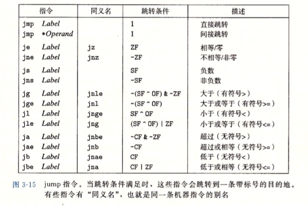

除了整数寄存器，CPU还维护着一组单个位的条件码(condition code)寄存器，它们描述了最近的算术或逻辑操作的属性。可以检测这些寄存器来执行条件分支指令。最常用的条件码有:
CF:进位标志。最近的操作使最高位产生了进位。可用来检查无符号操作的溢出。
ZF:零标志。最近的操作得出的结果为。
SF:符号标志。最近的操作得到的结果为负数。
OF:溢出标志。最近的操作导致一个补码溢出—正溢出或负溢出。
访问条件码
条件码通常不会直接读取，常用的使用方法有三种:
1)可以根据条件码的某种组合，将一个字节设置为0或者1；
2)可以条件跳转到程序的某个其他的部分；
3)可以有条件地传送数据。
对于第一种情况，指令根据条件码的某种组合，将一个字节设置为0或者1。我们将这一整类指令称为SET指令;它们之间的区别就在于它们考虑的条件码的组合是什么，
这些指令名字的不同后缀指明了它们所考虑的条件码的组合。这些指令的后缀表示不同的条件而不是操作数大小。例如，指令setl和setb表示"小于时设置(set less)"和"低于时设置(set below)"，而不是"设置长字(set
long word)"和"设置字节(set byte)".
跳转指令
跳转(jump)指令会导致执行切换到程序中一个全新的位置。在汇编代码中，这些跳转的目的地通常用一个标号(label)指明。 mp指令是无条件跳转。它可以是直接跳转，即跳转目标是作为指令的一部分编码的;也可以是间接跳转，
即跳转目标是从寄存器或内存位置中读出的。汇编语言中，直接跳转是给出一个标号作为跳转目标的。

图中所示的其他跳转指令都是有条件的—它们根据条件码的某种组合，或者跳转，或者继续执行代码序列中下一条指令。这些指令的名字和跳转条件与SET指令的名字和设置条件是相匹配的。同SET指令一样，一些底层的机器指令有多个名字。条件跳转只能是直接跳转。
跳转指令的编码
在汇编代码中，跳转目标用符号标号书写。汇编器，以及后来的链接器，会产生跳转目标的适当编码。跳转指令有几种不同的编码，但是最常用都是PC相对的(PC-relative)。也就是，它们会将目标指令的地址与紧跟在跳转指令后面
那条指令的地址之间的差作为编码。这些地址偏移量可以编码为1, 2或4个字节。第二种编码方法是给出“绝对”地址，用4个字节直接指定目标。汇编器和链接器会选择适当的跳转目的编码。
用条件控制来实现条件分支
将条件表达式和语句从C语言翻译成机器代码，最常用的方式是结合有条件和无条件跳转。
用条件传送来实现条件分支
。。。。
要提供对过程的机器级支持，必须要处理许多不同的属性。为了讨论方便，假设过程P调用过程Q，Q执行后返回到P。这些动作包括下面一个或多个机制:
传递控制:在进入过程Q的时候，程序计数器必须被设置为Q的代码的起始地址，然后在返回时，要把程序计数器设置为P中调用Q后面那条指令的地址。
传递数据:P必须能够向Q提供一个或多个参数，Q必须能够向P返回一个值。
分配和释放内存:在开始时，Q可能需要为局部变量分配空间，而在返回前，又必须释放这些存储空间。
运行时栈
C语言过程调用机制的一个关键特性(大多数其他语言也是如此)在于使用了栈数据结构提供的后进先出的内存管理原则。在过程P调用过程Q的例子中，可以看到当Q在执行时，
P以及所有在向上追溯到P的调用链中的过程，都是暂时被挂起的。当Q运行时，它只需要为局部变量分配新的存储空间，或者设置到另一个过程的调用。另一方面，当Q返回时，任何
它所分配的局部存储空间都可以被释放。因此，程序可以用栈来管理它的过程所需要的存储空间，栈和程序寄存器存放着传递控制和数据、分配内存所需要的信息。当P调用Q时，
控制和数据信息添加到栈尾。当P返回时，这些信息会释放掉。
x86-64的栈向低地址方向增长，而栈指针%rsp指向栈顶元素。可以用pushq和popq指令将数据存人栈中或是从栈中取出。将栈指针减小一个适当的量可以为没有指定初始值的
数据在栈上分配空间。类似地，可以通过增加栈指针来释放空间。
当x86-64过程需要的存储空间超出寄存器能够存放的大小时，就会在栈上分配空间。这个部分称为过程的栈帧(stack fram)。当前正在执行的过程的帧总是在栈顶。当过程P
调用过程Q时，会把返回地址压入栈中，指明当Q返回时，要从P程序的哪个位置继续执行。我们把这个返回地址当做P的栈帧的一部分，因为它存放的是与P相关的状态。Q的代码会扩
展当前栈的边界，分配它的栈帧所需的空间。在这个空间中，它可以保存寄存器的值，分配局部变量空间，为它调用的过程设置参数。大多数过程的栈帧都是定长的，在过程的开始
就分配好了。但是有些过程需要变长的帧。通过寄存器，过程P可以传递最多6个整数值(也就是指针和整数)，但是如果Q需要更多的参数，P可以在调用Q之前在自己的栈帧里存储好
这些参数。
为了提高空间和时间效率，x86-64过程只分配自己所需要的栈帧部分。例如，许多过程有6个或者更少的参数，那么所有的参数都可以通过寄存器传递。实际上，许多函数甚至
根本不需要栈帧。当所有的局部变量都可以保存在寄存器中，而且该函数不会调用任何其他函数(有时称之为叶子过程，此时把过程调用看做树结构)时，就可以这样处理。例如，到
目前为止我们仔细审视过的所有函数都不需要栈帧。
转移控制
将控制从函数P转移到函数Q只需要简单地把程序计数器(PC)设置为Q的代码的起始位置。不过，当稍后从Q返回的时候，处理器必须记录好它需要继续P的执行的代码位置。在
x86-64机器中，这个信息是用指令call Q调用过程Q来记录的。该指令会把地址A压人栈中，并将PC设置为Q的起始地址。压人的地址A被称为返回地址，是紧跟在call指令后面的那
条指令的地址。对应的指令ret会从栈中弹出地址A，并把PC设置为A.
call指令有一个目标，即指明被调用过程起始的指令地址。同跳转一样，调用可以是直接的，也可以是间接的。在汇编代码中，直接调用的目标是一个标号，而间接调用的目标
是*后面跟一个操作数指示符.
数据传送
当调用一个过程时，除了要把控制传递给它并在过程返回时再传递回来之外，过程调用还可能包括把数据作为参数传递，而从过程返回还有可能包括返回一个值。x86-64中，
大部分过程间的数据传送是通过寄存器实现的。
x86-64中，可以通过寄存器最多传递6个整型(例如整数和指针)参数。寄存器的使用是有特殊顺序的，寄存器使用的名字取决于要传递的数据类型的大小，会
根据参数在参数列表中的顺序为它们分配寄存器。可以通过64位寄存器适当的部分访问小于64位的参数。例如，如果第一个参数是32位的，那么可以用%edi来访问它
。
如果一个函数有大于6个整型参数，超出6个的部分就要通过栈来传递。假设过程P调用过程Q，有n个整型参数，且n>6。那么P的代码分配的栈帧必须要能假设过程容纳7到n号参
数的存储空间。要把参数1~6复制到对应的寄存器，把参数7~n放到栈上，而参数7位于栈顶。通过栈传递参数时，所有的数据大小都向8的倍数对齐。参数到位以后，
程序就可以执行call指令将控制转移到过程Q了。过程Q可以通过寄存器访问参数，有必要的话也可以通过栈访问。
栈上的局部存储
到目前为止我们看到的大多数过程示例都不需要超出寄存器大小的本地存储区域。不过有些时候，局部数据必须存放在内存中，常见的情况包括:
.寄存器不足够存放所有的本地数据;
.对一个局部变量使用地址运算符‘&’，因此必须能够为它产生一个地址;
.某些局部变量是数组或结构，因此必须能够通过数组或结构引用被访问到;
寄存器中的局部存储空间
寄存器组是唯一被所有过程共享的资源。虽然在给定时刻只有一个过程是活动的，我们仍然必须确保当一个过程(调用者)调用另一个过程(被调用者)时，被调用者不会覆盖调
用者稍后会使用的寄存器值。为此，x86-64采用了一组统一的寄存器使用惯例，所有的过程(包括程序库)都必须遵循。
根据惯例，寄存器%rbx,%rbp和%r12~0r15被划分为被调用者保存寄存器。当过程P调用过程Q时，Q必须保存这些寄存器的值，保证它们的值在Q返回到P时与Q被调用时是一样
的。过程Q保存一个寄存器的值不变，要么就是根本不去改变它，要么就是把原始值压人栈中，改变寄存器的值，然后在返回前从栈中弹出旧值。压入寄存器的值会在栈帧中创建标
号为“保存的寄存器”的一部分。有了这条惯例，P的代码就能安全地把值存在被调用者保存寄存器中(当然，要先把之前的值保存到栈上)，调用Q，然后继续使用寄存器中的值，不用
担心值被破坏。
...